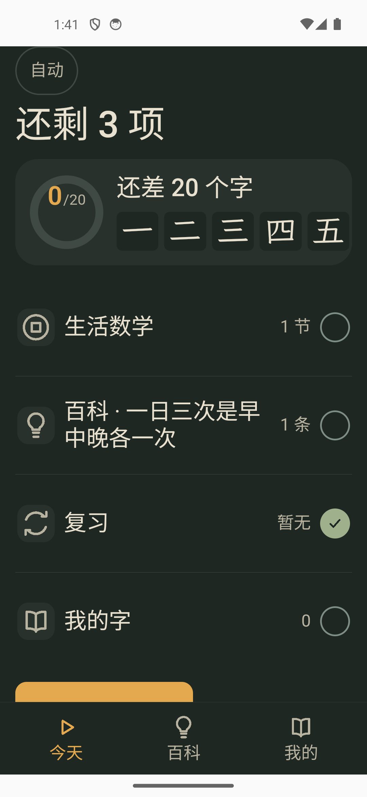
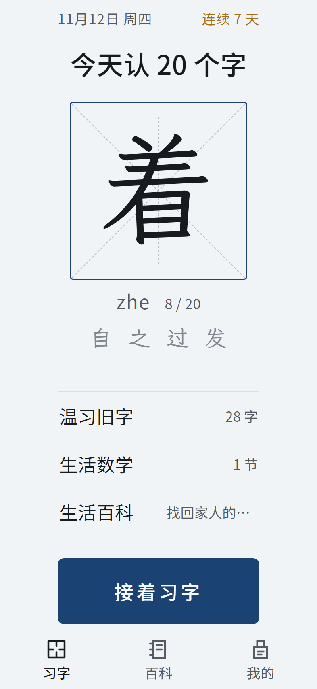

首页
初版 · 你判为垃圾

通用列表 + 暗底琥珀，汉字几乎看不见；主按钮被 TabBar 切掉一截。
描红版 · 还是不够简洁

方向对了（田字格当主角），但执行上把题材变成了装饰：
红色格子 + 印章 + 红书签 + 彩色图标 + 四个小格，一屏 28 个盒子、34 处红。
靛墨版 · 当前

一张纸，一个米字格，三行安静的任务，一屏只有按钮是靛青的。
分组交给间距（块间 ≥36px），不交给边框。